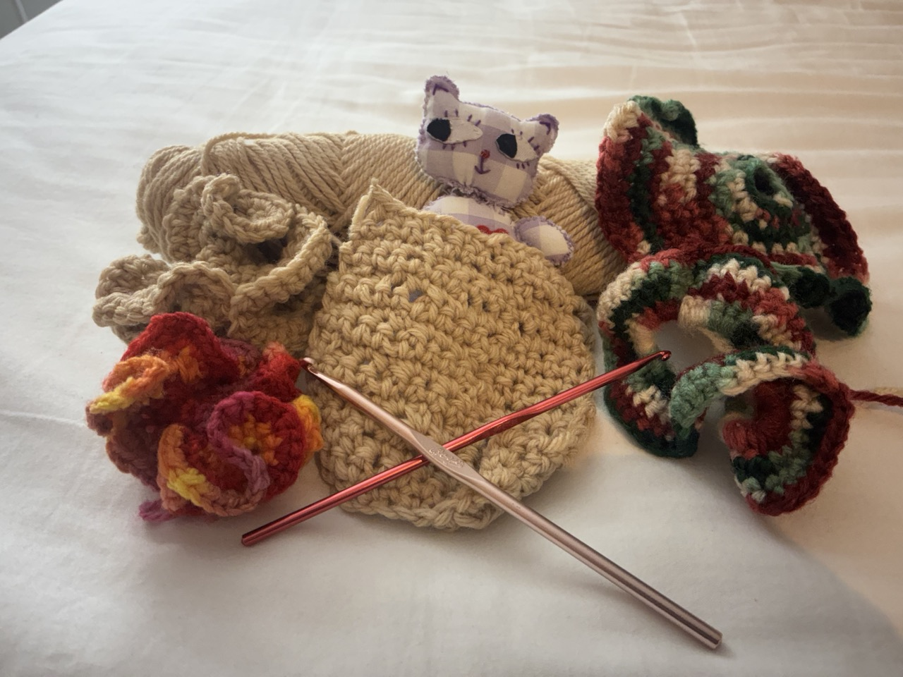
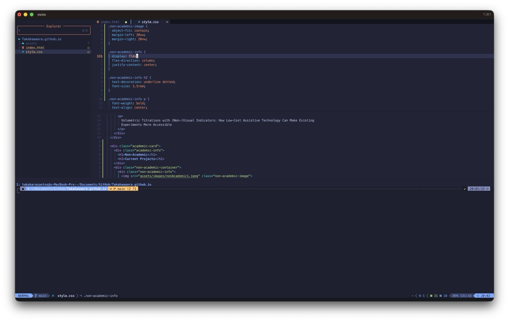
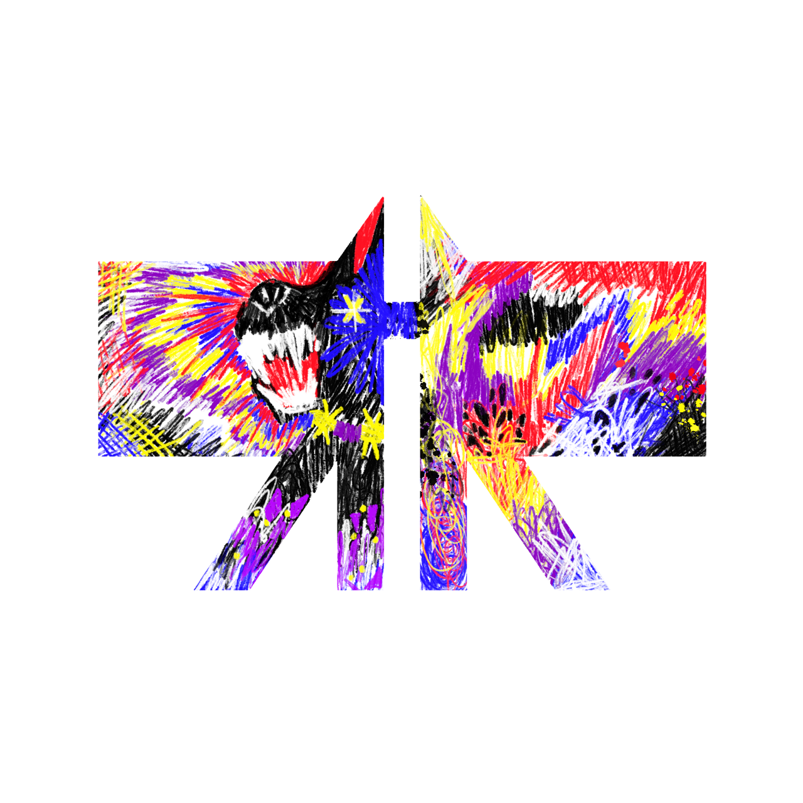
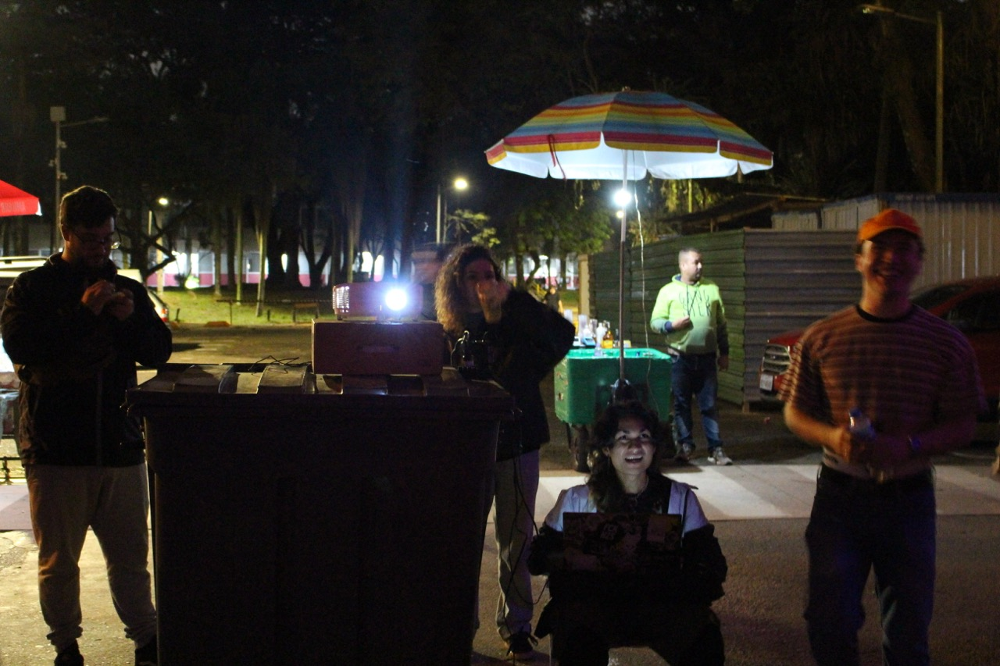

Non-Academic
Current Projects

In July 2026, I visited the Krennert Art Museum where a giant crochet coral reef installation was on display, created by Christine Wertheim and Margaret Wertheim. It was so colorful and creative that I instantly felt the need to know how it was made. So I went to the The Idea Store, bought my first hook and yarn, and googled "How to Crochet", the first few days were terrible, but soon I was able to follow a tutorial to crochet my own hyperbolic coral!Crochet

When I was 12 years old, I told my mom that I wanted to be a game developer. Obviously, I had no idea what I was talking about, I was just a kid in 2015 watching Minecraft videos on YouTube. But my lovely mother found a programming school for kids in my hometown and enrolled me. Since then, programming has stayed in my life in some way, but I never took it seriously. Now, I am trying to learn more by building projects like this personal website to honor that childhood curiosity.Programming
Projects

I made my first friends in college at a QiB (Quinta i Breja | Thursday n Beer) a typical party inside USP. Back then, QiBs were organized by a artistic and cultural collective formed by ECA students called CANil, at one point they posted on Instagram that they were recruiting new members, so I submitted my application and waited. A week later they messaged asking if I wanted to work at their next QiB. That’s how I started, and I 'never' stopped.CANiL
 "Sindicato dos DJs da USP" (USP DJs' Labor Union) was a
project I created to host workshops with experienced DJs on
campus, teaching new students how to play a set, use the
equipment, and more. The funniest part is that while a "DJ
labor union" started as a joke, it lowkey turned into a
hyperstition.
I actually ended up having meetings and discussions during
student strikes about gig payment and artistic freedom at
university parties.
"Sindicato dos DJs da USP" (USP DJs' Labor Union) was a
project I created to host workshops with experienced DJs on
campus, teaching new students how to play a set, use the
equipment, and more. The funniest part is that while a "DJ
labor union" started as a joke, it lowkey turned into a
hyperstition.
I actually ended up having meetings and discussions during
student strikes about gig payment and artistic freedom at
university parties.
SinDJ-USP

VJ